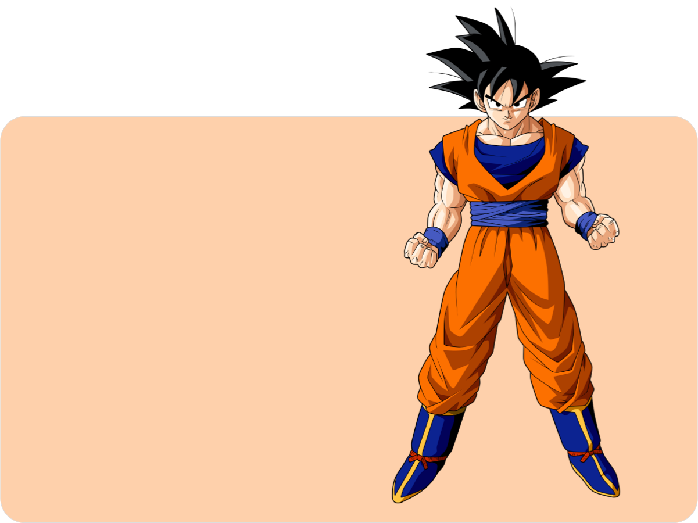
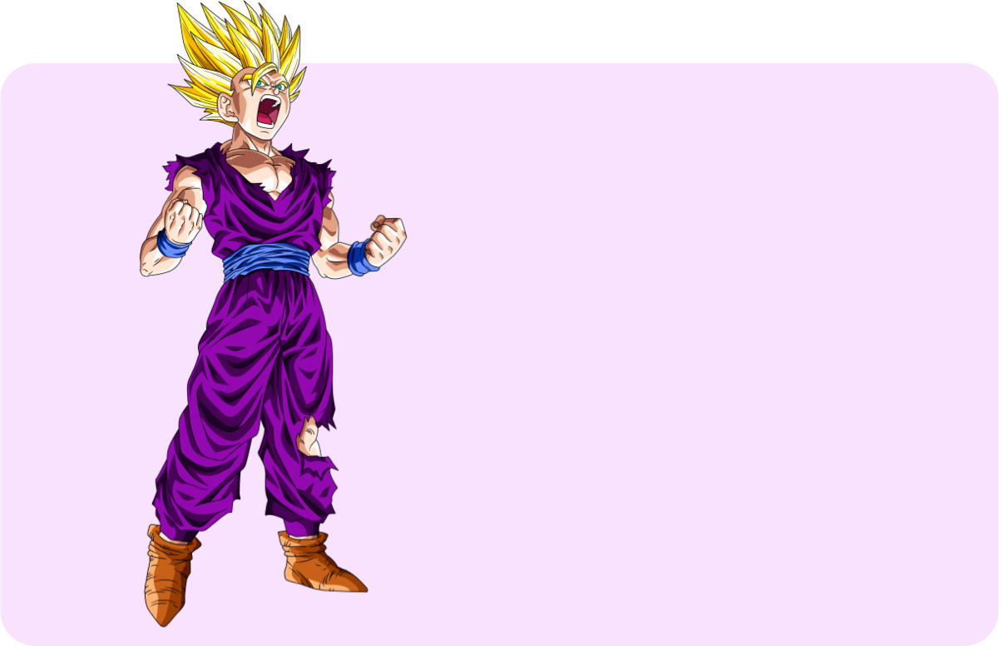
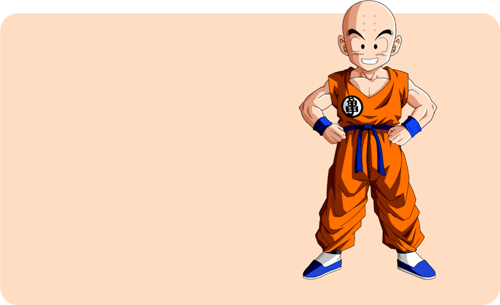
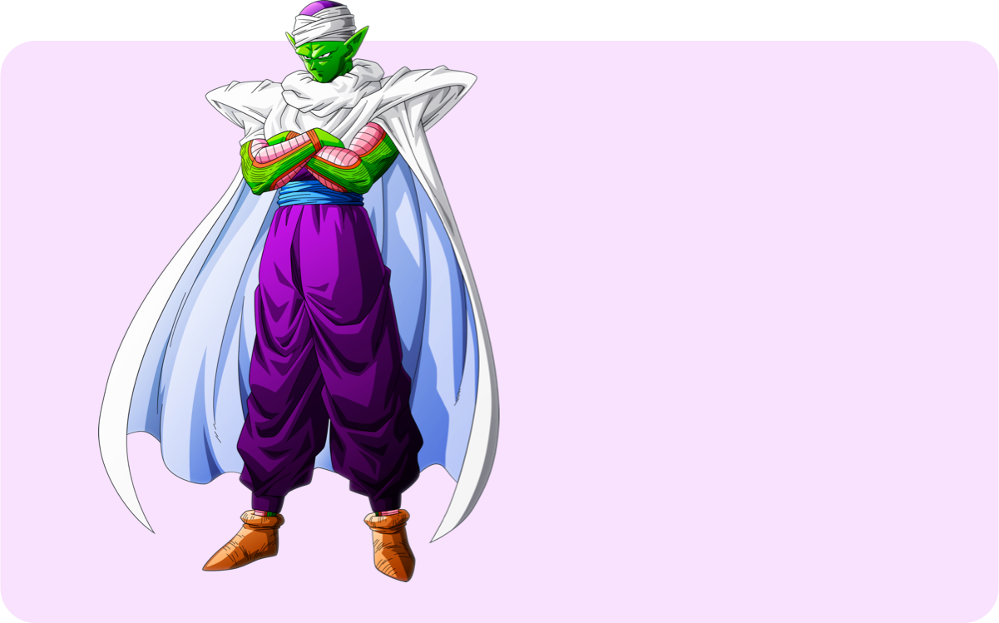
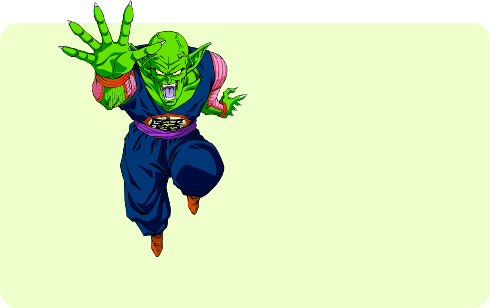
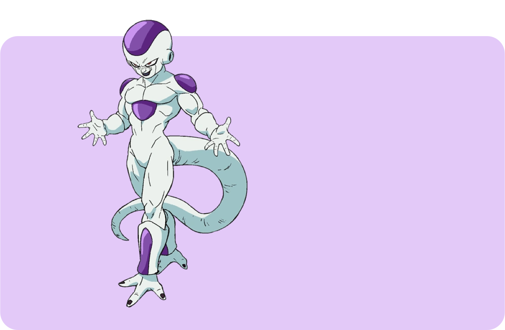
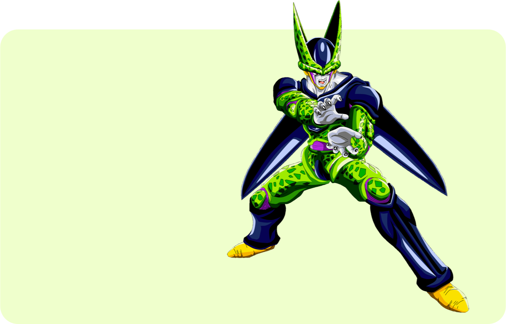
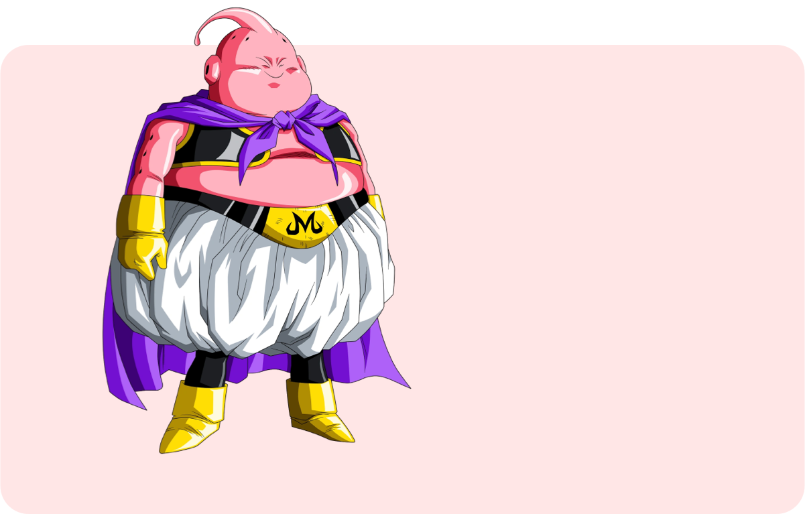

Dragon Ball
Le dossier : partie 1
Présentation
Dans un monde bien différent du nôtre, le jeune Son Gokû vit seul dans l’immensité du Mont Paozu. Loin de la civilisation, son attitude est des plus primaires mais grâce à l’entraînement de son défunt grand-père, le jeune garçon à queue de simien a développé une force surhumaine et une aisance dans la maitrise des arts martiaux.
En faisant la rencontre de Bulma, adolescente aussi intelligente que pimbêche, la destinée du garçon mi-homme mi-singe va changer. Bulma est en effet à la recherche des Dragon Ball, sept boules de cristal qui permettraient de faire apparaitre Shenron, le dragon sacré, afin de voir un vœu exaucé. Possédant l’une de ces reliques en tant que dernier souvenir de son grand-père, Gokû décide d’accompagner Bulma dans sa quête périlleuse à travers le monde. Ainsi débute un long voyage pour la collecte des Dragon Ball qui ne sera pas le dernier, et notre héros verra apparaître nombre d’adversaires tous plus robustes les uns que les autres…
Une longue fresque éditoriale
Le premier chapitre de Dragon Ball paraît dans le Shônen Jump en novembre 1984 pour s’achever en 1995, le quarante-deuxième et dernier opus paraissant le 4 aout de cette même année. Au final, ce sont 519 chapitres qui composent la série. En 1993, Glénat acquiert les droits de la série et propose une première édition au même nombre de tomes mais proposant une traduction plus occidentale et des jaquettes inédites, cette première monture s’achevant en novembre 2000. Dans le but de proposer une version plus proche du manga original, Glénat réédite dès 2003 la série en reprenant les couvertures japonaises et en proposant une traduction beaucoup plus fidèle au texte d’origine à travers 21 coffrets regroupant deux tomes chacun. Le dernier coffret paraît en septembre 2008.
En parallèle et jusqu’au milieu des années 2000, l’éditeur a proposé la série en demi tomes destinés aux kiosques à journaux. 85 petits volumes composent cette édition qui a connu quatre vagues de sortie, chacun d’entre elle étant assignée à une couleur : blanche pour la première, rouge pour la seconde, orange pour la troisième et violette pour la quatrième. Concernant cette dernière, le texte proposé correspond aux coffrets deluxe dont la traduction avait été refaite. De décembre 2002 à avril 2004 paraît au Japon l’édition Kanzenban, autrement dit deluxe en grand format. La série passe ainsi de 42 à 34 tomes puisque cette nouvelle monture propose davantage de chapitres. Les jaquettes sont aussi inédites et la série s’octroie même quelques pages supplémentaires pour approfondir l’épilogue des aventures de Gokû. En France, Glénat a proposé cette édition de février 2009 à janvier 2015. En parallèle à l’histoire dessinée par Akira Toriyama, les japonais ont vu la série des Dragon Ball Daizenshuu paraître au terme du manga. Collection de dix ouvrages, ces volumes complètent l’histoire et l’univers de Dragon Ball ainsi que l’expérience des lecteurs à travers des illustrations de la série ou encore des explications diverses et variées sur le manga et l’anime. Difficile cependant de correctement positionner ces ouvrages qui correspondent aussi bien à des artbook qu’à des databook. En France, nous ne sommes même pas servis à moitié puisque seuls le premier et le septième Daizenshuu nous ont été proposés par Glénat. Le grand livre de Dragon Ball et Le dictionnaire de Dragon Ball correspondent ainsi aux premier et septième opus. L’un comprend une large gamme d’illustrations couleur de la série tandis que le second s’impose comme l’encyclopédie ultime de la saga.
Enfin, la dernière pièce de la mangathèque Dragon Ball que nous connaissons bien est la série d’anime comics qui retranscrivent la série animée Dragon Ball Z tout en évinçant les rallonges ainsi que ceux des films d’animation. Nous pouvons aussi évoquer les Full Color, une réédition du manga à partir de son second cycle entièrement colorisée et qui devrait, selon les dires de l’éditeur, atterrir en France un jour ou l’autre…
Même refrain pour l’anime
L’anime adapté de l’œuvre phare d’Akira Toriyama a son importance puisque c’est elle qui est responsable du succès de Dragon Ball à l’échelle internationale. Toutefois, difficile de ne pas s’y perdre entre les séries animées, films, OAV et épisodes spéciaux.
Dragon Ball débute le 26 février 1986 et le 16 avril 1989 pour un total de 153 épisodes qui adaptent un peu plus des seize premiers tomes du manga. La série a connu trois adaptations cinéma qui réécrivent les trois premiers arcs de l’histoire. Le téléfilm « L’armée du Ruban Rouge » fête les dix ans de la série et réinvente les débuts du périple de Gokû. Enfin, deux courtes OAV viennent s’insérer et cherchent à sensibiliser les plus jeunes sur certains dangers du quotidien. Dragon Ball Z démarre une semaine après Dragon Ball, soit le 26 avril 1989 pour s’achever le 31 janvier 1996 avec son épisode 291. La série, plus lente, adapte les tomes 17 à 42 du manga. Quinze films d’animation liés à l’intrigue principale viennent s’y ajouter et présentent souvent des ennemis inédits. Les deux téléfilms que sont « Le père de Son Gokû » et « L’histoire de Trunks » sont des récits canoniques présentés dans le manga. A ceci s’ajoutent trois Oav : « Le plan d’anéantissement des Saiyen » est l’adaptation du scénario d’un jeu-vidéo et a eu droit à un remake inclus dans le jeu Dragon Ball : Raging Blast 2, « Salut ! Son Gokû et ses amis sont de retour » est une histoire créée pour les 40 ans du Shônen Jump et présente le petit-frère de Vegeta, et « Episode of Bardock » adapte le court manga de Naho Ôishi qui fait suite au téléfilm sur le père de Son Gokû.
Notons qu’en France, nous avons bénéficié de deux films cinémas. Le premier sorti en 1995 est en réalité la compilation des films 12 et 13, et le second paru en 1996 regroupe les films 10 et 11. Ne voulant renoncer à la licence Dragon Ball, la Toei décide de poursuivre l’aventure juste après la fin de Dragon Ball Z par le biais de Dragon Ball GT, série entamée le 7 janvier 1996 et terminée le 19 novembre 1997 avec 64 épisodes. La série ne s’est que peu développée et n’a eu droit qu’à un téléfilm en guise de supplément, ce dernier se déroulant 100 ans après la dernière aventure de Gokû.
Le revival de l’anime démarre avec Dragon Ball Kai, nomme en occident Dragon Ball Z Kai, une série qui entame la remasterisation en haute définition de Dragon Ball Z en supprimant tous les rajouts faits par rapport au manga. La série débute en avril 2009 avec une première partie en 98 épisodes qui adapte les sagas Saiyen, Freezer et Cell avant de s’achever en mars 2011. En avril 2014, la série reprend pour plus d’un an. Toutefois, la Toei a créé deux versions, l’une étant destinée au Japon et l’autre pour l’international. La version que nous connaissons en France se nomme ainsi Dragon Ball Z Kai : The final chapters et comporte des génériques inédits mais aussi une bande originale différente par rapport à la version nippone ainsi que sept épisodes fillers qui furent conservés. Au final, la série intégrale est de 159 épisodes au Japon contre 166 à l’international.
Le phénomène le plus actuel est marqué par Dragon Ball Super, suite directe à Dragon Ball Z qui a débuté le 5 juillet 2015, soit juste après la fin de Dragon Ball Z Kai. L’histoire de la série est supervisée par Akira Toriyama et réécrit les événements des films « Battle of Gods » et « La résurrection de "F" » tout en allant plus loin. Ainsi, Dragon Ball GT devient une œuvre parallèle est n’est plus à considérer comme une suite officielle. Gageons que du côté des films, l’apparition d’un troisième long-métrage n’est pas à exclure même si rien n’est officiel à l’heure actuelle.
Akira Toriyama
Né le 5 avril 1955, Akira Toriyama ne se dédie pas directement aux manga au cours de sa carrière puisqu’il occupe dans un premier temps un poste de designer au sein d’une agence de publicité. En se voyant refuser une promotion, il démissionne et orientera ses recherches d’emploi vers le dessin de manga. En tombant sur l’annonce d’un concours, il dessine un one-shot humoristique mais la date butoir étant passée, c’est au Jump que le futur maître envoie ses manuscrits. Il sera placé sous la tutelle de Kazuhiko Torishima, à l’époque jeune éditeur qui est devenu depuis rédacteur en chef du Jump. Les premiers travaux de Toriyama sont laborieux mais grâce au travail collectif des deux collaborateurs, le style du mangaka s’améliore et Docteur Slump voit le jour en 1980 pour s’achever en 1984, après dix-huit volumes.
Lassé depuis un moment par les aventures d’Arale, Toriyama cherche à rebondir vers une autre série. Il se base alors sur ses films préférés de Jackie Chan qu’il regarde souvent en dessinant et s’oriente vers un titre sur les arts-martiaux inspiré du roman la Pérégrination vers l’Ouest. Le one-shot Dragon Boy voit le jour et rencontre un succès, l’histoire devient ainsi Dragon Ball en 1984, la série tirant sa révérence en 1995 après quarante-deux opus. Même après avoir achevé sa série, le maître ne quittera jamais totalement le navire. Il dessinera alors quelques croquis pour la série Dragon Ball GT et ce même s’il ne touchera pas au scénario, puis officiera de nouveau sur la série dès 2013 au scénario et aux illustrations des films Battle of Gods et La résurrection de ‘F’ avant de s’embarquer dans l’aventure Dragon Ball Super.
La suite de la carrière du mangaka est composée essentiellement de one-shot, la plupart se déroulant dans l’univers de Docteur Slump et Dragon Ball. On compte alors Sand Land, Neko Majin ou encore Jaco the Galactic Patrolman. Cette dernière œuvre sert même de préquelle à Dragon Ball et dévoile les origines des deux parents de Gokû à travers un chapitre bonus, Dragon Ball Minus. Certains de ses travaux sont plus particuliers, notamment L’apprenti Mangaka qui est un guide pour les auteurs en herbe, et Katsurakira qui est un recueil de nouvelles réalisé en collaboration avec son grand ami, Masakazu Katsura. Toujours attaché à son travail de dessinateur, Akira Toriyama est aussi le character-designer de différents jeux-vidéo, notamment des RPG. Ses plus célèbres travaux sont Dragon Quest, Blue Dragon et Chrono Trigger. Surnommé « l’empereur sans couronne » au Japon du fait qu’il n’ait jamais gagné une seule récompense dans son pays natal, Akira Toriyama a remporté le Prix Spécial du 40ème Festival international de la bande dessinée d’Angoulême.
Personnages
Son Gokû :
Originaire du Mont Paozu, Son Gokû est le petit-fils adoptif du grand expert en arts martiaux Son Gohan. Mais une nuit de pleine lune, il retrouva sa maison en miettes et son grand-père décédé, laissant le jeune Gokû livré à lui-même, la faute à son pouvoir de se transformer en singe géant les soirs de pleine lune.
Doté d’une force surhumaine et toujours désireux de gagner en force, il passe ses journées à s’entraîner. Sa rencontre avec Bulma vient néanmoins casser sa routine puisque c’est à partir de cet instant que Son Gokû part à la recherche des Dragon Ball et mènera de multiples combats. Son périple l’amènera notamment à devenir le disciple de Kame Sennin et à participer aux tournois Tenkaichi Budokai.
Une fois adulte, il épousera Chichi et lui donnera deux enfants, Son Gohan puis Son Goten. Gokû est en réalité un Saiyan (ou Saiyajin), une race d’extraterrestre qui conquiert des planètes après avoir exterminé leurs habitants afin de les revendre aux plus offrants. Gokû, dont le vrai nom est Kakarot, fut envoyé sur Terre alors qu’il était bébé pour envahir la planète mais se cogna violemment la tête, lui faisant perdre la mémoire et lui permis de gagner une nature plus docile. Mais sa vraie identité étant ce qu’elle est, Gokû garda un goût du combat et de l’entraînement, au point de devenir un Super Saiyan.
Son Gohan :
Fils de Son Gokû, Gohan était un enfant pleurnichard jusqu’à ce que Piccolo le prenne sous sa tutelle afin d’en faire un fier guerrier, en vue d’affronter les Saiyen. Son Gohan gagnera alors en confiance mais ne prendra pas goût à l’entraînement comme cela peut être le cas chez son père. Il se battra ainsi lorsque la Terre sera menacée mais gardera comme ambition première de devenir un savant, au grand bonheur de Chichi qui veut faire de son fils un élève modèle. Très attaché à son père, Gohan porte énormément d’affection à Piccolo. Lorsque Son Goten naîtra, il se chargera de son entraînement. Il épousera plus tard Videl, la fille du champion Satan, avec laquelle il aura une fille : Pan. Gohan est décrit comme le Saiyen qui a le plus de potentiel en termes de puissance mais une fois la paix revenue sur Terre, il délaisse l’entraînement pour se concentrer sur ses études. De cette manière, il se fera distancer à plusieurs reprises par son père et Vegeta.
Krilin :
Le meilleur ami de Son Gokû est un pratiquant d’arts-martiaux autrefois roublard qui s’est volontairement rasé le crane jusqu’à son mariage. Krilin a énormément progressé auprès de Gokû mais est resté un fidèle disciple de l’école de Kame Sennin là où son ami est parti s’entraîner auprès du Tout-Puissant puis du dieu Kaioh. Il est le terrien avec le plus gros potentiel de puissance et participera aux batailles les plus importantes, y compris sur des planètes lointaines. Krilin entretient le rêve de se trouver une charmante épouse. Il tombera ainsi amoureux du semi-androïde C-18 qu’il finira par épouser après la bataille contre Cell. Ils auront ensemble une fille, Marron, et c’est à partir de cet instant que Krilin cessera de s’entraîner et se laissera pousser les cheveux. Il contribuera toutefois à faire régner la paix en devenant agent de police.
Piccolo :
Enfant de Piccolo Daimaoh, Piccolo a d’abord voulu prendre sa revanche sur Son Gokû au cours du Tenkaichi Budokai. Après sa défaite, il continua à s’entraîner et a entretenu une rancune tenace contre son rival de toujours qu’il espérait tuer en combat singulier avant de s’imposer en maître sur la Terre. L’arrivée des Saiyen sur Terre a néanmoins chamboulé ses plans puisque Piccolo a pris sous son aile Son Gohan, le fils de Gokû, afin d’assurer son entraînement. Résultat, l’ancien démon s’attacha à l’enfant et devint plus bienveillant, au point d’abandonner sa quête de revanche et s’imposer comme un allié pour Gokû et les siens. Piccolo découvrira qu’il est en réalité un Namek, un extraterrestre dont le géniteur est la part négative d’un autochtone qui a fui sa planète natale pour éviter un cataclysme. Pour ces raisons, Piccolo est lié au Tout-Puissant, et la mort de l’un occasionne celle de l’autre.
Bulma :
Petit génie et fille d’un célèbre inventeur, Bulma est la personne par qui toute l’aventure de Son Gokû a débuté. D’abord envieuse de réunir les Dragon Ball pour se trouver un petit-ami, elle restera longtemps en couple avec Yamcha et participera à de nombreuses aventures de « P’tit Son » comme elle aime l’appeler. Sa présence est essentielle puisqu’elle a inventé le Dragon Radar, capable de détecter tous types de Dragon Ball. D’un naturel capricieux, Bulma ne cessera de se disputer avec Yamcha, ce qui les mènera à leur séparation. Elle jettera ensuite son dévolu sur Vegeta qu’elle hébergera et aura deux enfants avec lui, Trunks et Bra. Par la famille que Bulma va offrir à Vegeta, elle va permettre au prince des Saiyen de gagner en humanité. Dans un futur dévasté par les cyborgs, Bulma mettra au point la machine à remonter le temps pour permettre à son fils de venir en aide à Gokû dans le passé.
Piccolo Daimaoh :
Part négative du Tout-Puissant qui s’est détachée de lui après la création des Dragon Ball, Piccolo Daimaoh a toujours voulu dominer la Terre mais fut scellé par le maître d’arts-martiaux Mutaito grâce à la technique du Mafuba. Libéré de cette emprise, il s’est mis à la recherche des Dragon Ball pour regagner la jeunesse éternelle. Il est le premier grand ennemi de Gokû par la force incroyable qu’il représente. Piccolo Daimaoh est capable de pondre des œufs par la bouche pour donner naissance à des démons mais peut aussi enfanter un fils namek pour le même procédé. C’est de cette manière et juste avant de mourir que Piccolo Daimaoh donnera naissance à Piccolo.
Vegeta :
Fils du roi Vegeta, monarque du peuple Saiyen, Vegeta est un guerrier à l’ambition démesurée et l’égo surdimensionné. Sa force est naturellement au-dessus d’un Saiyen ordinaire si bien qu’il restera bien plus puissant que Gokû lors de sa première apparition. Suite à son combat sur Terre, Vegeta gagnera énormément en puissance et entretiendra le désir de devenir le Super Saiyen de la légende. Il tiendra ainsi tête au tyran Freezer et à ses hommes afin de gagner la vie éternelle grâce aux Dragon Ball de Namek. Ses plans seront néanmoins amenés à changer et surpassé par Gokû puis dépourvu de réelles ambitions, il restera sur Terre pour s’entraîner et affronter de puissants adversaires. Il fondera même une famille avec Bulma, une étape importante qui fera disparaître le guerrier maléfique qu’était Vegeta, faisant de lui un fier guerrier défendant la Terre et sa famille.
Freezer :
A la tête d’une armée galactique qui extermine des peuples et trafique des planètes, Freezer est le responsable de l’extinction du peuple Saiyen et de la destruction de la planète Vegeta. Il se rendra sur Namek pour devenir immortel grâce aux Dragon Ball mais trouvera sur son chemin Vegeta, mais surtout Gokû et ses amis. Doté d’une force extraordinaire innée, Freezer se définit comme un tyran et n’hésite pas à éliminer ceux qui osent lui tenir tête. Il n’est pas seul à diriger son armée puisqu’il est notamment épaulé par son père, le roi Cold, ainsi que Cooler, son frère.
Cell :
Né de la fusion de différentes ADN, Cell est le cyborg ultime créé par le Docteur Gero. Néanmoins, il a besoin d’absorbé les androïdes C-17 et C-18 pour obtenir le corps et la puissance parfaite, raison pour laquelle il a volé la machine à remonter le temps de Trunks pour revenir dans le passé. Cell possède une incroyable puissance de base et ne vit que pour entretenir la perfection de ses talents. En tant que création du Docteur Gero, il a un désir inné de vouloir affronter Gokû mais n’entretient pas d’autres conquêtes. Pour ces raisons, il laissera une chance aux héros de le défaire : le vaincre au cours des Cell Game, un tournoi où chacun sera libre de l’affronter en un contre un.
Majin Boo :
Démon créé par le sorcier Bibidi, Boo est un Majin qui extermina presque intégralement le groupe des Kaioh Shin avant d’être scellé dans un cocon dans les entrailles de la Terre. Des milliers d’année plus tard, il est ramené à la vie par Babidi et le démon Dabra qui ont volé l’énergie de Son Gohan. Depuis qu’il a absorbé l’un des Kaioh Shin, Boo n’est plus forcément mauvais, il est simplement poussé à faire le mal par ses maîtres sans en avoir conscience et massacrer les innocents représente pour lui un jeu et ne mesure pas la gravité de ses actes. Il sera ramené à la raison par Satan qui deviendra son ami. Néanmoins, un tragique événement le poussera à extérioriser sa part négative, donnant alors naissance à un second Boo bien plus maléfique qui absorbera le premier.
Cette nouvelle menace poussera nos héros dans leurs derniers retranchements, les amenant même à fusionner. Une fois le mauvais Boo vaincu, Majin Boo résidera chez Satan et restera un allié de la bande. Il n’oubliera toutefois pas sa gourmandise légendaire… Quant au mauvais Boo, il ne sera pas envoyé en enfer à sa mort. En effet, le roi Enma entendra la requête de Gokû et le réincarnera en un jeune terrien à la puissance latente incommensurable : Oob.